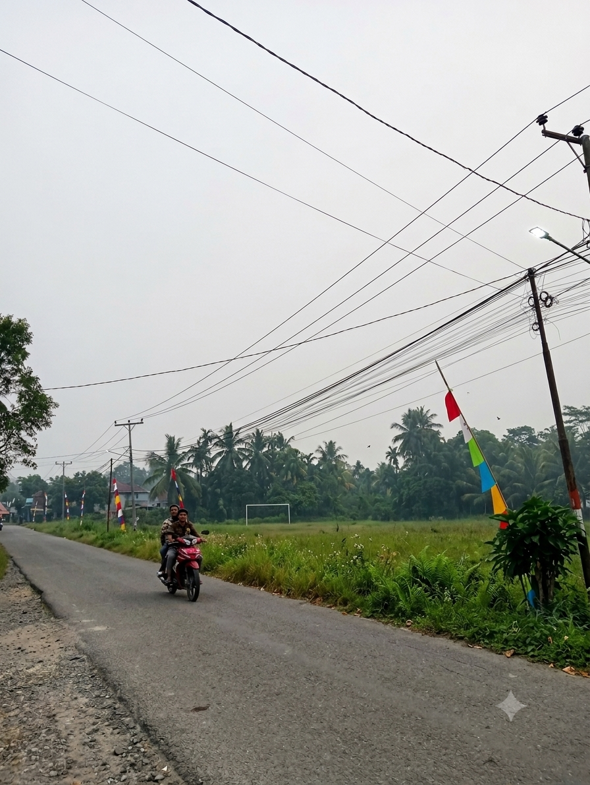
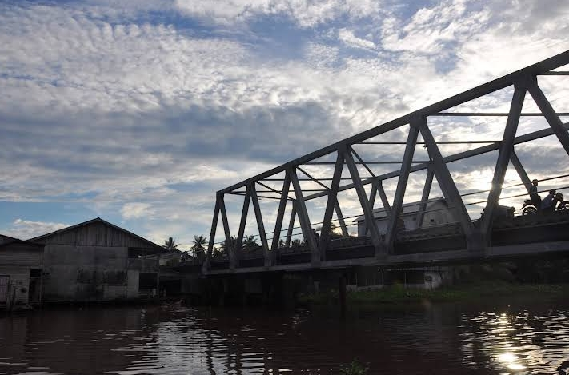
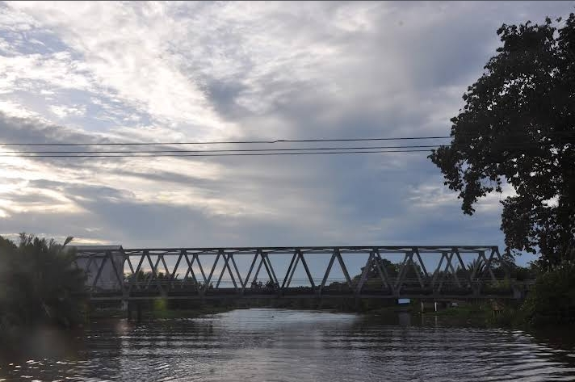
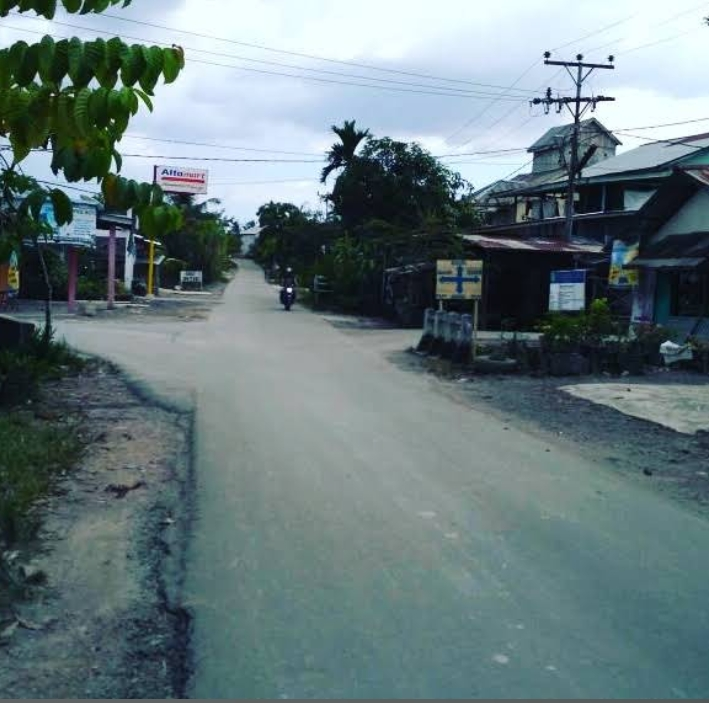

KEINDAHAN ALAM
Pesona Alam Sungai Kelambu
Menikmati suasana alam dan lingkungan pedesaan yang asri.
JELAJAHI
Keindahan Alam Desa

Suasana Pedesaan
Suasana pedesaan yang tenang memberikan kesan nyaman bagi masyarakat maupun pengunjung.

Lingkungan Hijau
Lingkungan hijau menjadi salah satu daya tarik dari kehidupan pedesaan.

Sungai
Sungai menjadi salah satu bagian dari lingkungan dan kehidupan masyarakat desa.

Pemandangan Desa
Pemandangan sekitar desa memberikan suasana alami yang menarik untuk dinikmati.
Alam yang indah adalah bagian dari kekayaan sebuah desa.
Mari menjaga lingkungan Desa Sungai Kelambu agar tetap indah dan nyaman.